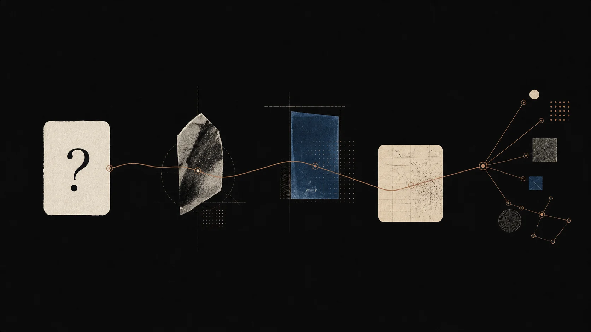
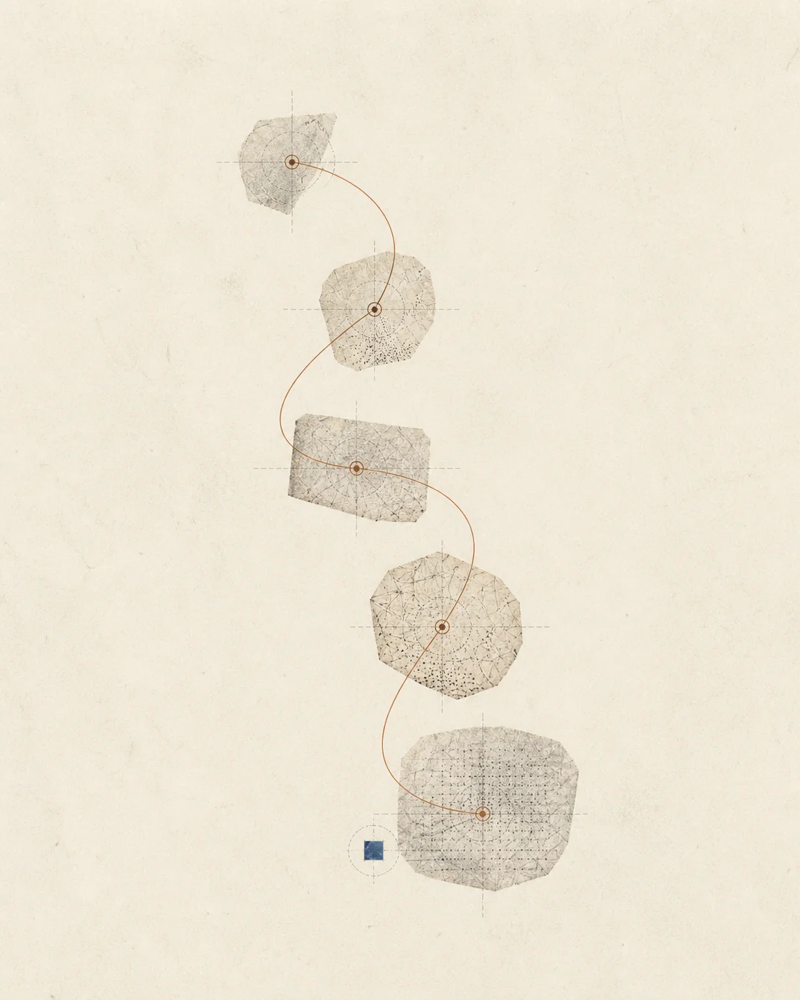

01 / 对话
停留在那个还说不通的地方。
用日常语言提问。Socrates 会跟随你的推理，给出更锋利的问题，帮你找出答案下面藏着的假设。
学习循环
Socrates 会陪你把一个想法走完：提出问题、解释它、回忆它，再把它连接回你已经知道的东西。
一种练习，而不是信息流
每一次对话都会留下可以回看的痕迹：主张、理由、不确定的地方，以及下一个问题。

01 / 对话
用日常语言提问。Socrates 会跟随你的推理，给出更锋利的问题，帮你找出答案下面藏着的假设。
02 / 回忆
把有用的时刻变成之后可以重新回答的小问题。用自己的话再次解释，会让下一次对话更准确。
03 / 知识地图
你的问题会形成一张不断生长的地图，让统计学里的概念遇见哲学中的旧想法，也遇见昨天读到的笔记。
04 / 练习
用低压力的问题和短解释发现：什么已经成立，什么还缺一块，以及下一个更好的问题应该从哪里开始。

一次会话留下什么
每次对话都会写进一个小而持久的文件，之后还可以回来查看：问题、第一次尝试、更清楚的子问题，以及这个想法现在在地图中的位置。没有什么会被一个找不回来的信息流浪费掉。
A / 问题
开启对话的原始问题会和整次会话一起保存，所以回到一个想法的路径始终清晰可见。
B / 更好的问题
有用的子问题会和你的回答并排保存，之后复习时不必重新阅读整段对话，也能接回原来的线索。
C / 你的尝试
你的短总结，是判断自己理解了什么的诚实信号。它会留在导师回答旁边，让进步真正可见。
D / 连接
当一个概念触碰到你过去问过的内容，Socrates 会把这条连接写进知识地图，留给下一次回来时的你。
可以带来的主题
Socrates 适合那些需要解释、而不只是查找的想法。下面的列表并不完整，我们还在不断扩展它擅长的主题。
一种不同的导师
大多数 AI 产品奖励下一个提示词。Socrates 奖励的是你能用自己的话说出的下一个问题。对话越深入，界面越安静。